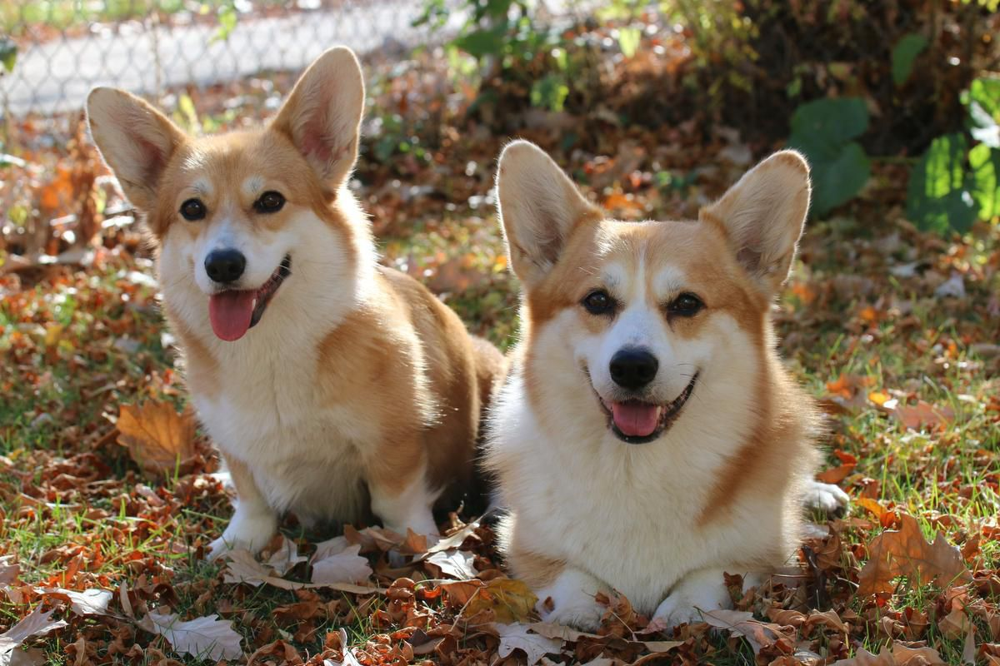

Антон Чехов родился в большой семье в Таганроге. Его отец, Павел Егорович, сначала гонял продавать быков из Воронежской губернии в Москву, а в 1858 году стал купцом третьей гильдии. В браке с Евгенией Морозовой у них родилось шестеро детей, сам Антон был третьим.cОбстановка в доме Чеховых была строгой: детям не позволяли бездельничать. Ежедневно в пять часов утра братья пели в церковном хоре, а после школы помогали отцу в бакалейной лавке. Все дети должны были изучать ремесло: Антон, например, познавал профессию портного. Мать же учила детей быть отзывчивыми, уважать и поддерживать слабых, любить природу и окружающих. Учиться будущий писатель начал в 1868 году в таганрогской гимназии. Там он взял литературный псевдоним Чехонте, по прозвищу, которое дал ему один из учителей. В 13 лет Чехов впервые побывал в театре, где шла оперетта французского композитора Жака Оффенбаха «Прекрасная Елена». Именно тогда Чехов полюбил сцену и литературу.
1876 году Чехов-старший разорился, и вся семья уехала в Москву. Шестнадцатилетний Антон, завершавший обучение в гимназии, остался один и занимался репетиторством, чтобы заработать себе на жизнь. В эти годы он много читал, писал очерки для гимназических журналов, а журнал «Заика» с короткими зарисовками из таганрогской жизни отправлял братьям в Москву. Тогда же Чехов написал первую пьесу — «Безотцовщина» и водевиль «Недаром курица пела». В 1879 году Чехов окончил гимназию и уехал из Таганрога в Москву. Там он начал заботиться о семье, обеспечивал близких на скромный доход от литературных публикаций. Дебют Чехова в печати состоялся в декабре того же года: в журнале «Стрекоза» были опубликованы рассказ «Письмо к ученому соседу» и юмореска «Что чаще всего встречается в романах, повестях и т. п.»
+79066833238